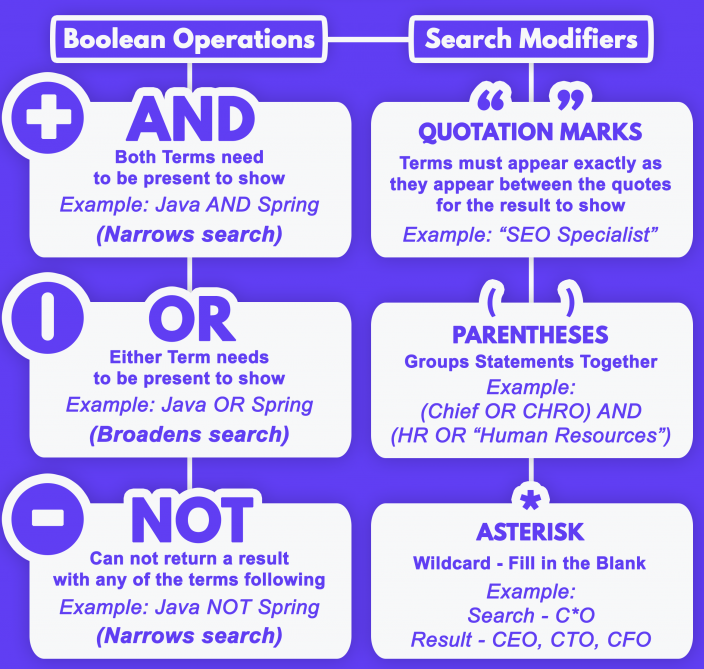
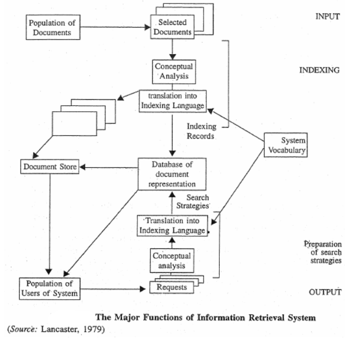
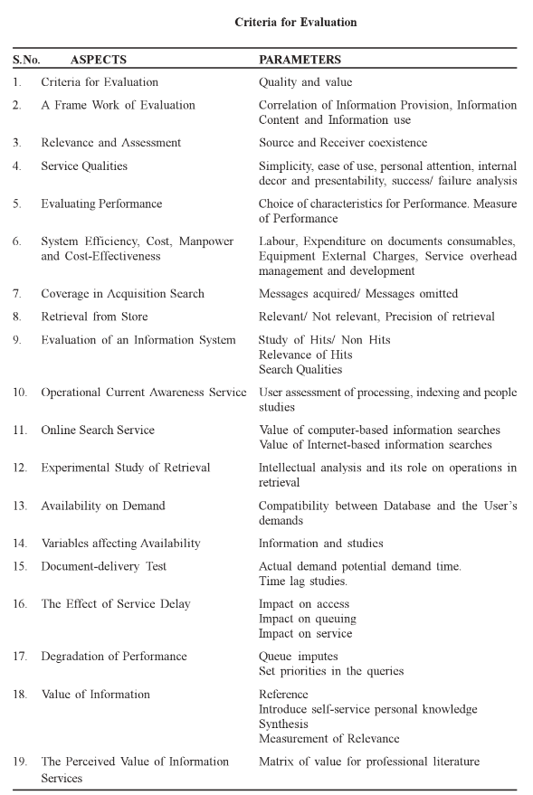
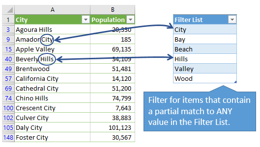
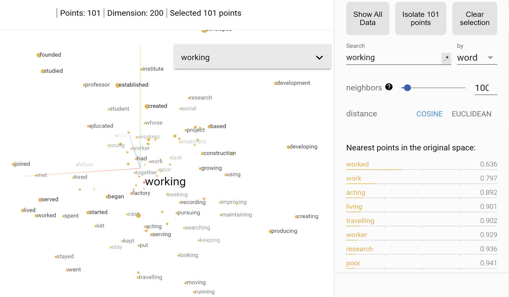

Information Storage and Retrieval System (ISAR)
Paper-M-108
14th May 2023
What Will You Learn - Part A?
- Define Information Storage and Retrieval System (ISAR)
- Know Different Types of ISAR
- Understand knowledge representation aspects of ISAR system designed according to information requirements
- Explain the components of ISAR system
- Uses of ISAR system in libraries and information centres
Information Storage and Retrieval System (ISAR)
ISAR
Definition 1
According to Sparck Jones an Information Retrieval System is a set of rules and procedures, for performing some or all of the following operations:
Indexing (or constructing of representations of document)
Search formulation (or constructing of representations of information needs)
Searching (or matching representations of documents against representations of needs)
Index language construction (or generation of rules of representation)
ISAR (Cont.)
Definition 2
- According to Kowalski “An information retrieval system is a system that is capable of storage, retrieval and maintenance of information. Information in this context can be composed of text (including numeric and date data), images, audio, video and other multi-media objects. Although the form of an object in an IRS is diverse, the text aspect has been the only data type that lent itself to full functional processing. Other data types have been treated as highly informative sources but are primarily linked for retrieval based upon search of the text”.
ISAR PURPOSE/OBJECTIVES
Information Facilitator: It should act as facilitator between information contained in the document & the user
Non-Ambiguous: Ambiguity of information is avoided so that search result is free from any kind of ambiguity
- Minimum Time: System should be so designed that minimum effort and time are spent to interrogate the system
- User-Friendliness: ISAR should have user friendly interface. The important aspects of ISAR should be highlighted
ISAR FEATURES
Competence and compatibility for consolidated searching and retrieval of information from any client terminal from any database within the system
It should be able to narrowcast or broadcast or relate the information need in a variety of associations to get optimum retrieval performance
It should have access facilities at multi-points
It should have common command language facility to retrieve info. from several databases of the system
It should be able to handle info. access from entity-related or object-oriented approaches
ISAR FEATURES (Cont.)
- It should have the ability to select, classify, process and consolidate the analysed information into a cohesive text ready for assimilation by the end-users
- It should have ability to orient the information to specialist needs of the users from time to time. This calls for understanding the processing of user profiles
- It should be able to retrieve maximum information with minimum number of clues. The fuzzy approaches of end-users must be able to get clarified and ultimate result should provide satisfaction to the searcher
- It should have capacity to interchange the information available in one database or another for purposes of retrieval relevance end usage
ISAR FEATURES (Cont.)
- It should have bibliographic data interchange capacity (using Z39.50 or similar standard) to meet consolidation to a chosen format for networking and other purposes. Compatibility with standards at all levels must be the goal
- It should have ability to search simple information quickly in an easy manner and also have the ability to multi-track the complex questions and present them in a simple easy manner. User-friendly presentations are very important.
ISAR COMPONENTS
F.W Lancaster (1979) mentioned that information retrieval system comprises six major subsystem:
- Document subsystem
- Indexing subsystem
- Vocabulary subsystem
- Searching subsystem
- User system interface
- Machine subsystem
These sub-systems are utilised in the performance of the following activities:
- information resource building,
- database creation and maintenance, and
- information retrieval and dissemination
ISAR COMPONENTS (Cont.)
- An ISAR system comprises of following components:
User Interface: It is the front-end which enables user to put a query and displays results. These are of two types:
- Query Interface
- Result Interface
Knowledge Base: The store house of any ISAR system is its Knowledge Base. It contains list of facts or related facts (information). Any kind of query is answered based on the facts stored in the Knowledge Base. A Knowledge Base could be a DBMS. Retrieval of information from storage depends on two important aspects of Knowledge Base:
ISAR COMPONENTS (Cont.)
- Knowledge Representation
Semantic Network Knowledge Representation - A semantic network contains points called nodes connected by links called as arcs
Frame Based Knowledge Representation - It is and object-oriented approach. A frame represents an object (document or information) or class of objects and are stored in slots
Rule-Based Knowledge Representation - Rules provide a formal way of representing recommendations, directives, or strategies
ISAR COMPONENTS (Cont.)
- Rules are appropriate when the domain knowledge results from empirical associations developed through years of experience in solving problems in a given area
- Rules are expressed in the form of IF-THEN statements
- Domain knowledge is represented as a set of rules that are checked against a collection of facts about current situation
- When the IF portion of the rule is satisfied by the facts, the action specified by the THEN portion is performed
- When the condition is satisfied the rule is said to ‘fire’ or ‘execute’
- A rule interpreter is used to compare the IF portions of rules with the facts and execute the rule whose IF portion matches the facts
ISAR COMPONENTS (Cont.)
- Indexing & clustering - Many system follow a kind of keyword indexing. Keyword indexes are sometimes good in recall not in precision and in some cases vice-versa. Such indexes fail in preserving the context of search term. E.g. World Wide Web
Efforts have made in this direction such as using clustering techniques like keyword clustering to attach semantics with a keyword. In such a technique, relation among the terms are used like Broader term, Narrower term and Related term. This technique heavily uses Thesaurus. Such relations can be stored in the form of sequential inverted files or using B-tree structures.
ISAR COMPONENTS (Cont.)
- Search Agent - It is a program which takes input from Search Interface and searches in the Knowledge Base using existing index.
- A good ISAR system means efficient retrieval. Thus, a good search agent must be equipped with following features:
- facility of using Boolean operators
- context setting to search terms
- use of clustering algorithms
- use of soundex and metaphone algorithms
ISAR COMPONENTS (Cont.)
- Search Agent
- Boolean Operators
Three Boolean operators are AND, OR and NOT
These operators are used to generate combinational search
AND and NOT operators increase precision whereas OR increases recall of search results

ISAR COMPONENTS (Cont.)
- Context Setting
It requires content analysis of document
It can be done manually or automatically to preserve the context of each term in the index. It can be done in two ways:
- Conceptual Analysis: It is the frequency of concepts. Concept can be represented by texts as well as pictures where text is very common. For example, if one is analyzing with a hypothesis that a certain document is about freedom then one should look for the related words like liberation, independence, etc.
ISAR COMPONENTS (Cont.)
- Relational Analysis: It goes one step further by examining the relationships among concepts in a text. In relational analysis we look for what are the related words appearing next to the word in question. For example, to see what are the words that appear next to “freedom” and then determine the related concepts
- Clustering Algorithms
- Clustering is a method by which large sets of data is grouped into groups or clusters of smaller sets of similar data based on some characteristics
ISAR COMPONENTS (Cont.)
It attempts to identify natural groups of components or data based on some similarity in a given population.
It is a method to create sub-class in a given class
The first thing in such algorithms are identification of core entity which is also known as centroid
Around centroid similar kind of entities or data are collected which are called as members of cluster
To determine cluster membership and size, most algorithms evaluate the distance between each entity or data and the cluster centroids
ISAR COMPONENTS (Cont.)
- Statistical techniques are used for generating clusters as output

ISAR COMPONENTS (Cont.)
- Soundex & Metaphone Algorithms
Both these algorithms are based in the way pronunciation of a word is made
In soundex algorithm, a numeric code is assigned to each character used in a word and when search is performed, words with similar codes are also brought out in search result
Whereas metaphone algorithm encodes on letter-by-letter basis. It encodes groups of letters i.e. a word. It embodies more accuratelt the rules of pronounciation in language
ISAR FUNCTIONS
- IR system is considered to have the function of “leading the user to those documents that will best enable him/her to satisfy his/her need for information” (Lancaster, 1979)
- Information is stored in natural language texts, and the mechanism used to represent the texts include both controlled &
 uncontrolled vocab. which separately or in combination constitute the indexing language
TYPES OF ISAR SYSTEMS
- Database Management System (DBMS)
It deals with data storage, maintenance and retrieval and is used to keep control and manipulate data within the database
It has the definite structure of the stored information, instead of dealing with natural language text
In DBMS, normally files of data are described by a small set of pre-specified attributes. Each attribute carries some kind of value in it.
For example: Records of books’ authors, title, publisher, year, etc
TYPES OF ISAR SYSTEMS (Cont.)
Therefore, a DBMS can be defined as set of records and each record contains fields (attributes) which in turn contain data (value). A database may contain textual, numeric, statistical and graphical information
OPAC is a kind of DBMS often built of some kind of Bibliographic Database Management Systems (BDBMS)
- Text Retrieval System
They are designed for unstructured data such as full text documents
Queries are based on keywords and a no. of advanced search techniques (such as proximity search) can be used
TYPES OF ISAR SYSTEMS (Cont.)
- Management Information System (MIS)
- It is a DBMS designed to cope up with the needs of management professionals who need to have information about different alternatives related to their interest to facilitate their work
- Decision Support System (DSS)
- DSS helps top-level management in arriving at decisions. There is very little difference between MIS & DSS. The former generated reports in anticipation or on demand and collect facts, whereas later provides alternative solutions
TYPES OF ISAR SYSTEMS (Cont.)
- Knowledge Based System (KBS)
Specialized computer programs, modeled in the same way as human experts tackle problems and arrive at solutions are called Expert Systems
Such systems rely upon a store of specialized knowledge for solving problems and hence referred to as KBCS
EVALUATION OF ISAR SYSTEMS
According to Claverdon and others, any ISAR system can be evaluated based on:
- Coverage of the collections
- Time lag (average interval between search request is made and answer is given)
- Form of Presentation of the Output
- Efforts involved on user’s part in obtaining answers to their search requests
- Recall of the system, that is, the proportion of relevant material actually retrieved in answer to a search request
- Precision of the system, that is, the proportion of retrieved material that is actually relevant
EVALUATION OF ISAR SYSTEMS (Cont.)
EXAMPLES OF ISAR SYSTEMS
- OPAC: Library catalogue has changed its form to the electronic form with the advent of computerisation called OPAC. OPAC provides access to the documents by different approaches of users, such as Author, Collaborator, Title, Subject, Keyword, etc. An OPAC is built on DBMS
- Digital Library: OPAC only provides bibliographic details not full-text information. This limitation led to development of full-text databases in digital form. This kind of database is known as Digital Library. Digital libraries are available over network often using World Wide Web
EXAMPLES OF ISAR SYSTEMS (Cont.)
Search Engines: WWW is itself is a big source of information. Almost everything and anything can be found over Internet. Search Engines provide a kind of interface for users to search the web. A Search Engine basically has three components:
- Web Crawler
- Database
- Agent
EXAMPLES OF ISAR SYSTEMS (Cont.)
Web Crawler goes to each and every site over Internet and indexes each word present in the page or sometimes few lines from the page. This index is stored in search engines database with corresponding URL (Uniform Resource Locator). When a search query is given it searches in databases of search engine and result is generated
Search Engines can be categorised into three main types:
- Individual Search Engines – text or image based search engine, for example, Google (www.google.com)
EXAMPLES OF ISAR SYSTEMS (Cont.)
- Search Engines
- Subject Directories – subject-based search engines, for example, Yahoo! (www.yahoo.com)
- Meta-search Engines – search engine of search engines, for example, Askjeeves (www.askjeeves.com)
INFORMATION RETRIEVAL
IR SEARCHING TECHNIQUES
- In bibliographic IR environment, searches can be divided into two main classes:
Known item search is the one where the user knows something about the item being sought such as author, title, publisher, ISBN, etc.
Unknown item search is the one where users are not aware of the existence of any document that may solve their problems.
IR SEARCHING TECHNIQUES (Cont.)
Exact Match Search: The search engine will only match query terms exactly; it does not allow for truncation, wildcards, or stemming. Exact Match option is nowadays available in Internet-based databases to retrieve more relevant information. Phrase search can be characterized as exact match search, where a phrase is given at the search query that searches whole phrase.
Best Match Search: In best match search, the search engine will match query terms closely, if not exactly. It may allow for truncation, wildcards, or stemming. Best Match search is performed, when exact match could not fetch sufficient number of relevant information.
IR SEARCHING TECHNIQUES (Cont.)
- Partial Match Search: A partial match is one that matches one or more characters at the end of the text input, but did not match all of the regular expression, although, it may have done so had more input been available. Partial matches are typically used when either validating data input,
 checking each character as it is entered on the keyboard, or when searching texts that are either too long to load into memory.
IR MODELS
- On the basis of input and the output, Information Retrieval Models can be grouped into three basic categories:
- Data Retrieval Model
– Data retrieval model essentially handles data
– A data retrieval model calls for organisational structure based on various criteria such as properties, clusters and other different entities
– There is a need for a taxonomic presentation of these aspects.
IR MODELS (Cont.)
– Such a taxonomic presentation must also be accessible from other types of associations
– A searcher of a data comes for a specific information retrieval. Therefore, the expression of information need should be very precise
– Therefore, the data retrieval model is a simple model of information retrieval needing specific matching techniques viz., a taxonomic structure of the various entities involved and their properties.
- Information Retrieval Model
– Information is data oriented to a purpose
IR MODELS (Cont.)
– It actually combines several data into a relational structure
– It is a more complex model
– It has to generally comprehend multi-dimensional relationships
– It is not amenable easily to a taxonomic structure
– The representation of information is to be based on a relational database structure using some associative mathematics
– The expression of information need is also complex and time consuming
IR MODELS (Cont.)
– It draws out for a long conversational or browsing process and the information retrieval model must incorporate such facilities and interfaces
- Knowledge Retrieval Model
– Knowledge is a kind of integration of general types of information
– It normally occurs in the human mind. The human mind infers and integrates several coordinates with the information received by it
– Knowledge is assimilated information. To facilitate decision-making and problem solving, intelligent knowledge based IR models are coming up
IR MODELS (Cont.)
– Such systems comprise three basic aspects:
- Knowledge Base
- Inference Engine
- User Interface
IR MODELS BASED ON THEORIES & TOOLS
Boolean Retrieval Model
- Standard
- Weighted: Weighting is the process of assigning an importance to an index term’s use in an item
Fuzzy Logic Model
– ISAR has software component that has the features and functions required to manipulate ‘information’ items
– This information is regarded as fuzzy text
IR MODELS BASED ON..(Cont.)
– The term ‘fuzzy’ is used to imply the results from the minimal standards or controls on the creators of the text items
– The author presents concepts, ideas and abstractions along with supporting facts
– Resulting in minimal consistency in the vocabulary and styles of items
– The searcher has to be omniscient to specify all search term possibilities in the query
– Fuzzy retrieval provide the capability to locate spellings of words that are similar to the entered search term. This function is primarily used to compensate for errors in spelling of words
IR MODELS BASED ON..(Cont.)
– Fuzzy retrieval increases recall at the expense of decreasing precision
– For example, a fuzzy search on the term ‘computer’ would automatically include the following words from the information database: ‘computer’, ‘compiter’, ‘computter’, ‘compute’
– Fuzzy retrieval has its maximum utilisation in a
– system that accepts items that have been optical character recognised
– In OCR process, a hardcopy item is scanned into a binary image
– Due to character errors throughout the text in OCR process, fuzzy retrieval allows location of items of interest compensating for the erroneous characters
IR MODELS BASED ON..(Cont.)
- Vector Space Model
– It represents the documents & queries as vectors in a multidimensional space, whose dimensions are the terms used to build an index to represent the documents
IR MODELS BASED ON..(Cont.)
- Probabilistic Retrieval Model
– Bayesian approach is the most successful in this model
– This approach is natural to information systems and is based upon the theories of evidential reasoning (drawing conclusions from evidence)
– It could be applied as part of index term weighting, but usually is applied as part of the retrieval process by calculating the relationship between an item and a specific query
– Probabilities are usually based upon a binary condition – an item is relevant or not
IR MODELS BASED ON..(Cont.)
– But in information systems the relevance of an item is a continuous function from non-relevant to absolutely useful
– The output ordering by rank of items based upon probabilities, even if accurately calculated, may not be as optimal as that defined by some domain specific heuristic
– The source of the problems that arise in application of probability theory come from a lack of accurate data and simplifying assumptions that are applied to the mathematical model
IR MODELS BASED ON..(Cont.)
- Linguistic Model
– In linguistic model for IR, IR are studied from the point of view of properties of language
– IR is provided by features of natural language as well as artificial language
– Languages carry three types of functions:
They represent the contents of documents and other forms of information
The information problem of users are represented in terms of language
Language is used in computer processing and in searching and retrieving of information
IR MODELS BASED ON..(Cont.)
The language works on three bases:
Semantic basis which conveys meaning from one human being to another
Syntactic basis which helps formation of semantics in the use of grammar
Vocabulary, which supply different meaning to terms for formation of sentences, paragraphs and other structures
– The logical structure of a language and the taxonomy of the languages refers to relationship between vocabulary and concepts
IR MODELS BASED ON..(Cont.)
– The vocabulary generally refers to the logical structure
– Vocabulary control also include thesaural control and technical glossary control
– Use of transformational grammar as well as parsing techniques provide processing speed of the language for IR
– Further, indexing language with coordinative control provides a basic model for IR
– Use of associative mathematics in search logic and in search expression formulation, provide yet another type of language control in IR
PREVIOUS YEAR QUESTIONS
Long Questions (12.5 Marks Each)
Q1: Explain the various components of ISAR
Q2: Discuss with suitable examples the various types of search techniques
Q3: Explain the need for evaluation of ISAR. Examine, by giving examples, the criteria which will be used for its evaluation
Q4: Discuss the various models of Information Retrieval with suitable examples
Short Notes (5 Marks Each)
- Precision & Recall
- Evaluation of IRS
- Information Retrieval Models